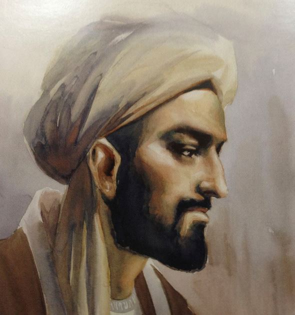
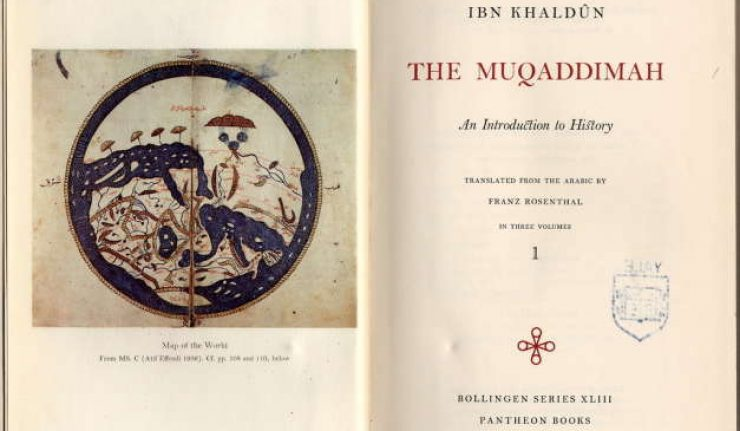

Ibnu Khaldun
Ibnu Khaldun, nama lengkap: Abu Zayd 'Abd al-Rahman ibn Khaldun al-Hadmari (lahir 27 Mei 1332 - meninggal 19 Maret 1406 pada umur 73 tahun) adalah seorang sejarawan muslim dari Tunisia dan sering disebut sebagai bapak pendiri ilmu historiografi, sosiologi dan ekonomi. Karyanya yang terkenal adalah Muqqadimah (Pendahuluan).
Lelaki yang lahir di Tunisia pada tanggal 1 Ramadhan 732 H./27 Mei 1332 M. adalah dikenal sebagai sejarawan dan bapak sosiologi Islam yang hafal Alquran sejak usia dini. Sebagai ahli politik Islam, ia pun dikenal sebagai bapak Ekonomi Islam, karena pemikiran-pemikirannya tentang teori ekonomi yang logis dan realistis jauh telah dikemukakannya sebelum Adam Smith (1723-1790) dan David Ricardo (1772-1823) mengemukakan teori teori ekonominya.
Tulisan-tulisan dan pemikiran Ibnu Khaldun terlahir karena studinya sangat dalam, pengamatan terhadap berbagai masyarakat yang dikenalnya dengan ilmu dan pengetahuan yang luas, serta ia hidup di tengah-tengah mereka dalam pengembaraannya yang luas pula.

